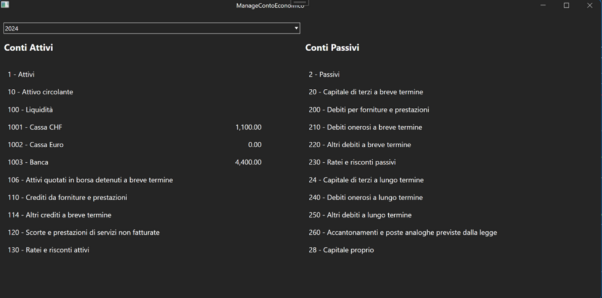

Portfolio

Damiano Gazzino
Sono uno sviluppatore web e software con esperienza nella creazione di soluzioni moderne e intuitive.
Sono uno sviluppatore web e software con esperienza nella creazione di soluzioni moderne e intuitive.

Il Club Pistola Tesserete necessita di un nuovo gestionale web per sostituire il sistema attuale, ormai superato e afflitto da vari problemi tecnici. L'obiettivo è creare una piattaforma moderna e affidabile per la gestione completa delle attività del club.
La nuova applicazione gestionale consentirà di amministrare in modo efficiente l'adesione e le dimissioni dei soci, la gestione delle licenze e il monitoraggio delle sessioni di tiro svolte dai militi.
Inoltre, includerà funzionalità avanzate per la gestione delle fatturazioni e delle statistiche, come la tracciabilità delle vendite di munizioni e altri servizi offerti dal club.
L'amministratore avrà il controllo completo sulla gestione dei ruoli e degli utenti, potendo assegnare permessi personalizzati per garantire una sicurezza ottimale e un'efficienza nella gestione delle risorse del club.
Tecnologie Utilizzate:

Questo progetto è una piattaforma E-Commerce moderna, progettata per offrire un'esperienza utente semplice e intuitiva. Il design responsive garantisce una fruizione ottimale su qualsiasi dispositivo, mentre l'architettura del sito è pensata per migliorare la navigazione e ridurre i tempi di caricamento.
Ho sviluppato questo sito per esplorare e applicare le migliori pratiche nel settore, concentrandomi su velocità, accessibilità e facilità d'uso. L'interfaccia pulita e il layout ben strutturato aiutano a garantire una fruizione fluida per l'utente, indipendentemente dal livello di esperienza con il web.
Il progetto è stato costruito con un'attenzione particolare alla scalabilità e alla gestione efficiente dei contenuti, utilizzando le più recenti tecnologie web come HTML5, CSS3 e JavaScript. Queste tecnologie sono integrate per assicurare un'interfaccia interattiva e una gestione affidabile dei dati.
Tecnologie Utilizzate:

Questo software di testing API è stato progettato per semplificare il lavoro degli sviluppatori, utilizzando tecnologie moderne per garantire prestazioni elevate. Con un'interfaccia intuitiva e funzionale, consente di eseguire test API sia automatizzati che manuali in modo semplice e preciso.
Il software offre supporto per test automatizzati API, rendendo i processi di sviluppo più veloci e affidabili. Include anche strumenti per test manuali, permettendo agli sviluppatori di analizzare i risultati in modo dettagliato e accurato.
Questo progetto rappresenta la mia passione per l'innovazione nel settore software. Con il software di testing API, fornisco una soluzione efficace che semplifica il lavoro degli sviluppatori e favorisce la creazione di applicazioni più robuste e affidabili.
Tecnologie Utilizzate:

Questo CRM web basato su API è stato sviluppato con l'obiettivo di approfondire la mia esperienza nei microservizi e nell'integrazione delle interfacce di programmazione delle applicazioni. Ho creato questa piattaforma come progetto personale per esplorare le best practices nella gestione delle relazioni con i clienti, utilizzando un'architettura moderna e scalabile.
Integrando diversi endpoint API, ho potuto sperimentare come garantire una sincronizzazione fluida e aggiornamenti in tempo reale con altre applicazioni e sistemi. Questo approccio mi ha permesso di comprendere meglio le sfide e le opportunità associate all'uso delle API, rendendomi più consapevole dell'importanza di una progettazione efficiente e di una buona gestione dei dati.
Attraverso questo progetto, ho non solo ampliato le mie competenze tecniche, ma ho anche acquisito una visione più profonda su come le API possano migliorare la collaborazione tra diversi sistemi.
Tecnologie Utilizzate:

Questo progetto è un'applicazione desktop progettata per la gestione delle finanze aziendali. Sviluppata con l'obiettivo di semplificare il monitoraggio delle entrate e delle uscite, l'applicazione offre un'interfaccia user-friendly e intuitiva.
Ho utilizzato WPF per l'interfaccia utente, garantendo un design moderno e funzionale, mentre SQLite è stato scelto per la gestione dei dati, permettendo un'organizzazione chiara e una facile consultazione delle informazioni finanziarie. Questa combinazione di tecnologie assicura un'esperienza fluida e reattiva per l'utente.
Attraverso questo progetto, ho approfondito le mie competenze nella programmazione desktop e nella gestione dei database, acquisendo preziose esperienze nel trattamento dei dati finanziari. Questo lavoro non solo ha migliorato la mia capacità di sviluppare applicazioni pratiche, ma ha anche rafforzato la mia comprensione delle esigenze aziendali nel campo della contabilità.
Tecnologie Utilizzate:
